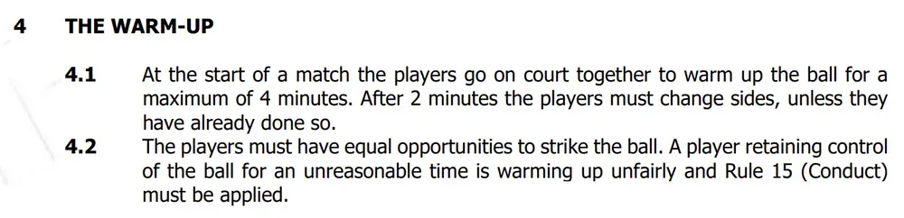

What's The Difference Between "The Warm Up" And "To Heat Up" In Squash?
The Warm Up is very different from To Heat Up, and this brief article will clarify the difference.
Regular readers and viewers of my videos will know that I promote the idea that players should be “heating up” before matches not “warming up”. Heating Up is the process of preparing your body and mind for the coming match. You should go through a planned routine, including increasing your body temperature and heart rate, general stretches, then squash-specific movements and swings, all the while focusing your mind.
Ideally, you should be sweating BEFORE you hit the ball in a proper match. Using the phrase “To Warm Up”, gives the wrong impression to people. They think that a few quick stretches before they walk onto court is enough – but it’s not. Especially if you want to perform at your best from the very first point.
What Is The Warm Up Then?
I would like to mention at this point that the “warm up” is also known more colloquially as “the knock up” in many places. The warm up is the period of time when two players enter the court together and hit the ball to get it hot. Of course, this only applies to proper, competitive matches and for most friendly games, the exact details are not important, but let’s have a quick look at them to ensure you know what you should be doing if you play tournaments. here are the rules taken directly from the World Squash Federation Singles Rules PDF.
As you can see. You get a maximum of 4 minutes to get the ball hot, become accustomed to the court (if it is new to you) and try to learn a little about your opponent – although honestly, I find it’s better to just focus on yourself at this point. You can’t spend 3 minutes on one side and 1 on the other. At least not according to the rules. For inter-club matches and local graded tournaments, there is a lot of flexibility when it comes tot he warm up. I’ve already written an articles about How To Use The Knock Up Effectively, and if you haven’t read that yet, I highly recommend you do.
The next point is about being fair to your opponent. Back in my playing days, anything more than 3 shots to yourself was considered rude. You are not hitting the ball to improve your swing technique, but getting the ball hot and preparing for the coming match. It's very tempting to see somebody hit the ball to themselves 4 or 5 times in a row and want to do the same, but then it becomes a vicious circle - they do it, so you do it etc.
Honestly, I don't really have a solution for this. I have seen people actually move across and volley the ball to stop their opponent from hitting too many shots back to themselves! If the match is being refereed, then it is the referee's job to stop it from happening.
Final Thoughts
The warm up referred to int he official rules is the time when the ball is being hit to get it hot and for the players to become accustomed to the court. To Heat Up is when you are preparing yourself for the coming match. Many people, including pros and coaches, use the phrase "warm up" to mean what I call "heat up".
Want To Continue Reading?
Try these links:
Previous How High Should You Hold A Squash Racket?
Next Coming Tomorrow
Random Take A Chance!
Popular Things To Know Before You Have Coaching